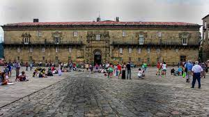

The Cathedral
The Holy Apostolic and Metropolitan Cathedral Church of Santiago de Compostela is a temple of Catholic worship located in the city of the same name, in the center of the province of La Coruña, in Galicia (Spain). It houses what, according to tradition, is the tomb of the Apostle Santiago, which turned the temple into one of the main pilgrimage destinations in Europe during the Middle Ages through the so-called Camino de Santiago, a religious route that connected the peninsula Iberian with the rest of the continent.

The beautiful Cathedral
The Cathedral of Santiago de Compostela is the most outstanding work of Romanesque art in Spain. It is also the final destination of all the Caminos de Santiago, which for centuries have taken the pilgrims of Christianity to the tomb of an apostle. As if that were not enough, it was the inaugural stone for the construction of a monumental city, Santiago de Compostela, which was born in a sacred forest at the end of the world with the vocation of a Holy City and a World Heritage Site.
Today, with a thousand years of existence lived to the rhythm of the extraordinary history of Compostela, the Cathedral is shown as a complex set of spaces capable of rewarding the faith of walkers with its powerful spirituality and with its beauty the visitors of the world.
Hostal dos Reis Católicos
The Hostal dos Reis Católicos (in Galician), also called the Hostal de Los Reyes Católicos (in Spanish) or Parador de Santiago de Compostela, is a five-star Parador hotel, located in the Praza do Obradoiro of Santiago de Compostela, Spain. It is widely considered one of the oldest continuously operating hotel in the world, and has also been called the "most beautiful hotel in Europe".
Amazing pciture
Nowadays, with its 137 rooms it is the finest and largest by capacity parador of the network, and continuing its hospitable tradition, it provides free services to a limited number of pilgrims every day.
Monasterio de San Martiño Pinario
It originated in a chapel dedicated to Santa Maria called the Corticela which was demolished in the late ninth century, except the chapel, which today is part of the Cathedral of Santiago, when King Afonso III the Great and the bishop Sisnando began the new cathedral construction. Thus, around the year 899, this monastery was built where Benedictine monks moved from the old chapel. This monastery was later replaced by another monastery whose church was consecrated in 1102 by Bishop Diego Gelmírez, but not much remains of that era.

San Martiño Pinario
Throughout the Middle Ages the monastery grew so that by the end of the fifteenth century the monastery became the richest and most powerful of Galicia. This brought about the almost complete reconstruction starting in the sixteenth century. From that century it was the most powerful monastery in Galicia, administering control over most Galician monasteries.
The current church began to be erected soon after the appointment of Juan de Sanclemente Torquemada as Archbishop of Santiago in 1587. The project was commissioned to Mateo López, the most outstanding monastic architect of the city. After the death of López in 1606, Benito González de Araujo assumed the direction of the work.